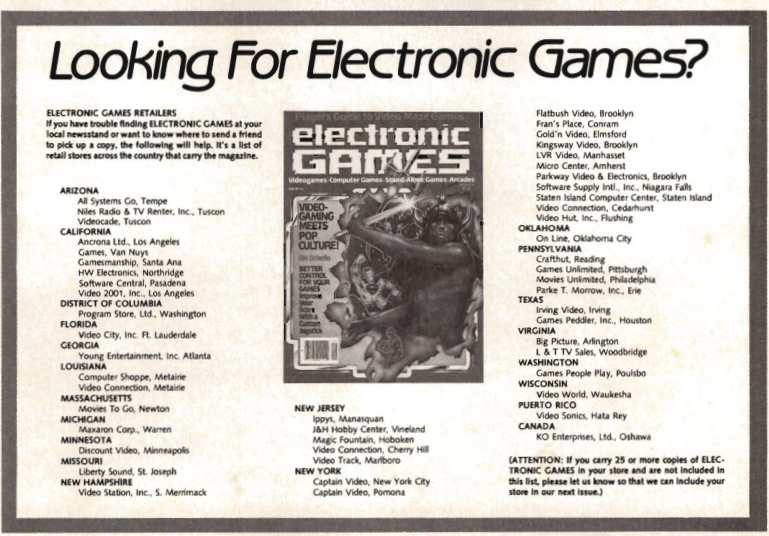
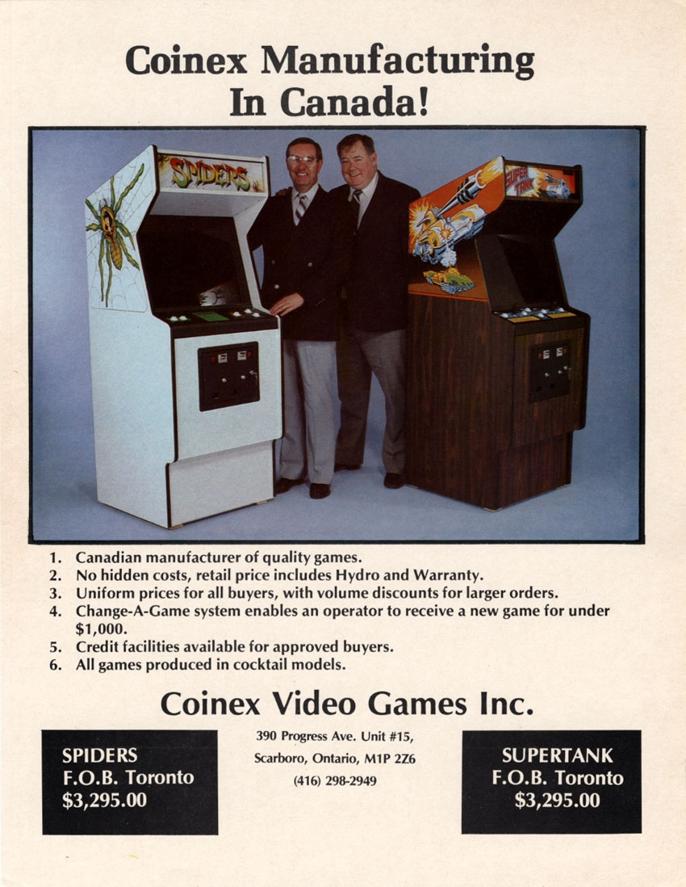
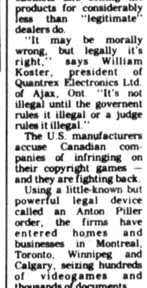
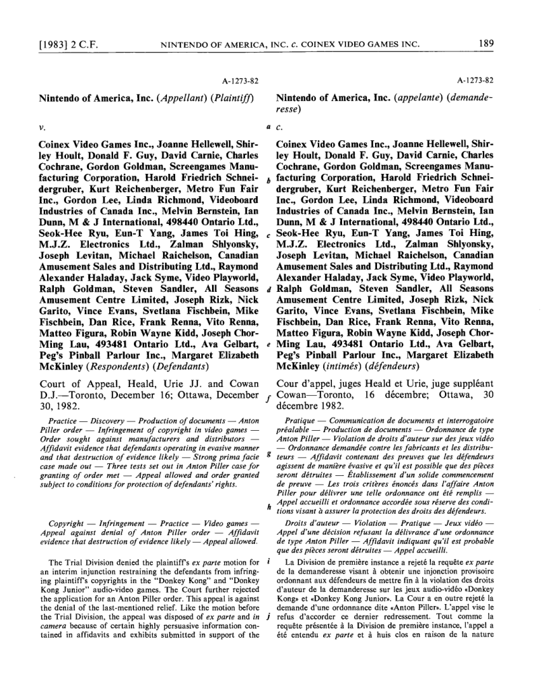

INTRODUCTION
Quantrex Electronics Ltd. is the kind of arcade company that almost disappears when history is written only from surviving machines. No confirmed Quantrex cabinet has yet been identified. No marquee, PCB, serial plate, sales flyer, manual, company logo, price list, or game title has been securely tied to the firm. There is no known catalog from which to reconstruct a neat lineup, and no surviving body of advertising that explains the company in its own words.
Yet Quantrex was real, and for a brief period it stood close to the center of one of the most contentious episodes in Canada’s early video-game industry.
The surviving record places Quantrex in Ajax, Ontario, at the beginning of the 1980s arcade boom. It identifies William Koster as company president, establishes a corporate beginning in late 1982, and places the business at 91 Station Street in 1983. It also connects Koster to a cluster of other small electronics and video-game businesses in the Oshawa-Ajax area, including KO Enterprises and Gameline Video Games Inc. Most importantly, a contemporary newspaper account places Koster publicly inside the Canadian game-building controversy of 1983, when American arcade companies were fighting a cottage industry of Canadian builders accused of producing unauthorized versions of popular games.
That one contemporary appearance gives Quantrex unusual historical importance for such an obscure company. Koster was not merely named in a directory or registry. He was quoted as a participant in the debate itself.
The story of Quantrex therefore cannot be told as a conventional game-company history built around a list of releases. It is instead a reconstruction: a company assembled from corporate records, local directories, newspaper reporting, related-company records, and the broader legal and commercial fight surrounding Canadian arcade builders. The result is incomplete in exactly the ways that make the story worth preserving. Quantrex shows how much of the early coin-op business existed outside the clean, well-documented world of major manufacturers—and how easily a small company could vanish while leaving only a few hard pieces of evidence behind.
BEFORE QUANTREX: WILLIAM KOSTER AND KO ENTERPRISES

The first useful trace of William Koster predates Quantrex itself.
Oshawa-area directory research conducted by the Archives at Whitby Public Library found a “Wm. Koster” at 587 Bermuda Court, Oshawa, in both the 1982 and 1983 directories. The listing identified him as president of KO Enterprises. The 1984 directory showed no return at that address; by itself, that absence does not establish a move, closure, or other event. The address matters because it later appears in federal-company records associated with “B. Koster,” a director of Gameline Video Games Inc. The exact residential-address match would become one of the keys to reconstructing Koster’s business network.
The KO Enterprises connection is especially interesting because KO was not merely a name buried in a city directory. It also appeared in the October 1982 issue of Electronic Games, one of the most important American consumer video-game magazines of the period.
On page 75, Electronic Games published a retailer directory headed “Looking For Electronic Games?” The magazine explained that the list identified retail stores carrying Electronic Games and invited retailers carrying at least 25 copies to contact the publisher for inclusion. Under Canada, the directory listed “KO Enterprises, Ltd., Oshawa.”
That small listing changes the way Koster’s later activities can be understood. By October 1982, he was already associated with a business publicly visible inside the consumer video-game retail ecosystem. Quantrex would not be incorporated until the following month.
The surviving evidence does not establish the full business model of KO Enterprises. It does not prove that KO sold arcade cabinets, built machines, distributed boards, or operated coin-op equipment. The Electronic Games listing proves something narrower but still useful: KO Enterprises was a retail outlet carrying a major video-game magazine, and William Koster was listed as its president in local directories.
That is enough to show that Quantrex did not emerge from nowhere.
In the chronology now available, Koster appears first through KO Enterprises in 1982, then through Quantrex Electronics Ltd. beginning in November of that year, and then through Gameline Video Games Inc. and other corporations in 1983. The sequence suggests an entrepreneur moving through a rapidly expanding electronics and game market at exactly the moment when video games were generating both extraordinary demand and equally extraordinary legal conflict.
The timing is difficult to ignore.
The early 1980s arcade boom had created a business environment in which small firms could enter quickly. Popular games were expensive, operators wanted new attractions, imported boards circulated widely, and legal distinctions involving copyright, trademark, cabinet design, program code, and game concepts were being tested in real time. In Canada, those conditions produced a distinctive builder culture that became large enough to draw the attention of Nintendo, Midway, Atari, Williams, and other major companies.
Quantrex was formed while Koster was still documented as president of KO Enterprises, just as that conflict intensified.
KOSTER’S 1982–83 BUSINESS CHRONOLOGY
The compressed chronology of William Koster’s known activity deserves close attention because so much happened within roughly one year.
In 1982, Koster was listed in the Oshawa/Whitby directory at 587 Bermuda Court as president of KO Enterprises.
By October, KO Enterprises, Ltd. appeared in Electronic Games as an Oshawa retailer carrying the magazine.
On November 26, 1982, Quantrex Electronics Ltd. was incorporated in Ontario.
On February 28, 1983, Gameline Video Games Inc. was incorporated federally.
By May 2, Koster was being identified nationally as president of Quantrex Electronics in Ajax and speaking publicly about the Canadian game-building dispute.
Later that month, BRAT Computers & Peripherals Ltd. was incorporated federally with B. Koster and C. H. Kalev as directors and 91 Station Street, Unit 4, as its office.
In June, Canflo Marketing Inc. added another Koster-associated corporation to the same period.
Seen separately, these are dry registry facts.
Seen together, they show an unusually concentrated period of entrepreneurial activity.
The pattern shows Koster participating in multiple business structures during the expansion of the Canadian electronics and video-game market.
The names themselves hint at different commercial directions.
“Quantrex Electronics” is broad.
“Gameline Video Games” is explicit.
“BRAT Computers & Peripherals” points toward the growing personal-computer and accessory market.
“Canflo Marketing” points toward a marketing-oriented venture by name, but its actual function is not established by the surviving record.
“KO Enterprises” is broad enough to cover almost anything, but its Electronic Games listing ties it to the video-game retail environment.
Names alone cannot establish business functions, yet the group looks less like random coincidence than a network of ventures built around overlapping electronics opportunities.
This was a period when the boundaries among arcade games, home video games, personal computers, peripherals, and electronic entertainment were porous.
A small entrepreneur could move among those categories more easily than a large specialized manufacturer.
That flexibility may help explain why Koster appears in both consumer-oriented and coin-op contexts.
KO Enterprises was visible to readers looking for Electronic Games magazine.
Quantrex was visible in the arcade-builder controversy.
Gameline’s name emphasized video games directly.
BRAT emphasized computers and peripherals.
Their exact functional relationship remains unknown.
The shared 91 Station Street address is especially important because it provides a physical center for at least part of this activity.
Quantrex and Gameline were both associated with that address in 1983, while BRAT used Unit 4.
The evidence does not establish whether all operations occupied the same room, shared staff, shared equipment, or simply used a common mailing address. But the concentration is real.
A useful way to understand 91 Station Street is therefore not as “the Quantrex factory” in the grand industrial sense, but as the known commercial node in Koster’s network.
This interpretation also keeps the company's likely scale in perspective.
The surviving evidence does not establish Quantrex’s size. Nothing supports imagining a large assembly line, warehouse full of hundreds of dedicated cabinets, or extensive engineering staff.
The Canadian builder industry included very small firms, sometimes one- or two-person operations.
Quantrex could have been similarly lean, but that remains unproven.
Its importance comes from participation in the market, not from proven scale.
QUANTREX IS FORMED
Official Ontario records establish the legal company clearly.
QUANTREX ELECTRONICS LTD. was incorporated on November 26, 1982, as an Ontario Business Corporation. Its Ontario Corporation Number was 528677. The company was governed in Ontario and later became inactive, with an inactive date of October 31, 1988.
The official corporate record is useful, but it is also incomplete for historical purposes.
The modern Ontario electronic profile reflects a later conversion of older corporate information into the provincial electronic system. Because Quantrex had already become inactive before that conversion, the current profile does not provide a complete early-1980s picture of directors, officers, or historical office addresses. The report repeatedly warns that additional historical material may survive only in older paper files or microfiche.
That limitation is important because it explains why the company can be legally confirmed while remaining biographically thin. Quantrex is not a phantom company; the corporation is real and precisely identifiable. What is missing is the ordinary descriptive material historians would want around that legal skeleton.
No available public filing identifies Quantrex’s full workforce. No complete early board roster has been recovered. No company brochure explains its products. No advertisement gives a slogan or sales pitch. No corporate photograph has surfaced.
The first strong public description instead comes from the press in 1983.
The company’s geographic setting is also significant. Quantrex operated in Ajax, east of Toronto, in the broader Durham Region corridor that included Oshawa, Whitby, Pickering, and nearby communities. Koster’s residence was in Oshawa. Later related-company evidence points to Ajax. Ajax placed Quantrex in the suburban Durham Region corridor east of Toronto. The surviving evidence identifies a commercial address but does not establish the scale of the operation.
The 1983 Durham-area telephone evidence places Quantrex at 91 Station Street in Ajax.
That address would become central to the reconstruction.
CANADA’S ARCADE-BUILDER ECONOMY

To understand why Quantrex matters, it is necessary to understand the unusual Canadian arcade market in which the company appeared.
Later historical work by Jean-Louis Trudel, drawing on contemporary sources including David Helwig’s Globe and Mail reporting, describes a Canadian cottage industry of arcade-machine builders active during the early 1980s. These were often tiny companies. Some operated with only one or two people. The Game Builders Association of Canada was said to represent roughly 50 members, although formal membership for Quantrex itself has not been independently documented.
The basic business environment differed from the conventional image of an arcade manufacturer designing a game from scratch.
According to the period reporting summarized by Trudel, Canadian builders often imported game boards, sometimes from Japan, then installed them into locally constructed cabinets. In some cases game names, trademarks, artwork, or aspects of presentation were altered. The finished machines could be sold at lower prices than fully authorized machines imported from American rights holders or official distributors.
That model made economic sense to operators.
From an operator’s economic perspective, a lower-priced machine could be attractive if it earned well enough to repay its cost. At the same time, the American and Japanese companies that had invested in game development saw unauthorized copies as a direct threat to their market.
The scale of copying described in contemporary accounts was not minor.
A Canadian retailer quoted in the historical record estimated that at least 60 percent of video games sold in Ontario were unauthorized knockoffs. Nintendo claimed that illegal Donkey Kong copies outnumbered legitimate Donkey Kong machines nine to one in Toronto in 1982.
Those figures describe the market around Quantrex, not Quantrex’s own production. There is no evidence that Quantrex produced Donkey Kong, and no such title should be assigned to the company without direct proof. The statistics matter because they show why an Ajax builder could find itself operating inside a major international conflict.
Canadian builders were not invisible garage experimenters by 1982–83. Collectively, they had become a commercial problem large enough to provoke coordinated litigation and press coverage.
Coinex Video Games Inc. provides one documented example of the broader industry. Period coverage and later preservation evidence connect Coinex to Barracuda, a Canadian game strongly associated with Pac-Man-style copying, and to Super Tank. Those games help demonstrate the nature of the market, but they belong to Coinex—not Quantrex. Their relevance is contextual.
That distinction matters: Coinex's documented machines cannot be used to fill the blank spaces in Quantrex's catalog.
The surviving record supports describing Quantrex as a Canadian arcade/video-game builder or assembler. It does not support assigning every practice described in the Canadian cottage industry to Quantrex personally. The larger industry explains the world in which William Koster spoke; it does not substitute for a lost Quantrex catalog.
THE ECONOMICS OF A LOCALLY BUILT ARCADE MACHINE
The Canadian builder phenomenon makes more sense when viewed from the operator’s side of the counter.
An arcade operator in 1982 or 1983 was making investment decisions constantly. A new machine had to earn back its purchase price before player interest moved elsewhere. The most desirable games could be expensive, and official distribution channels did not always deliver every title quickly or cheaply to every Canadian location.
A locally assembled machine offered another path.
If a builder could obtain a game board, construct or source a cabinet, install a monitor, controls, power supply, wiring, coin equipment, and artwork, and then sell the finished machine below the price of a fully authorized import, an operator had a strong economic reason to pay attention.
The machine did not need to be identical to an original cabinet to earn money.
Players primarily encountered the screen, controls, sound, and game itself. A locally made cabinet could look different while delivering familiar play. From an operator’s perspective, cabinet finish and brand prestige mattered less if the machine attracted customers and generated coins.
This economic logic helps explain why the Canadian copying market could become so large so quickly.
It also helps explain the language surrounding “game builders.”
The term did not necessarily mean a company that invented a game from scratch.
A builder could be engaged in the physical creation of the arcade machine as a commercial product: cabinet construction, wiring, installation of game boards, control layouts, monitors, coin doors, power supplies, and finishing. In that sense, a firm could genuinely build arcade games while relying on software or boards originating elsewhere.
That distinction is central to understanding Quantrex.
Nothing in the surviving evidence supports presenting Quantrex as the creator of an original hit comparable to a Nintendo, Atari, Williams, or Namco release. The documentary record instead places the company inside the builder economy.
That economy depended on the modular nature of arcade hardware.
An arcade cabinet was not a single sealed consumer appliance. It was a collection of replaceable systems. Boards could be swapped. Control panels could be altered. Monitors could be reused. Cabinet artwork could be changed. Wiring could be adapted. A machine that began life as one game could later become another.
This modularity was economically useful and historically destructive.
Every conversion could erase evidence of the previous configuration.
A generic or locally built cabinet might survive several game changes without preserving any obvious record of the company that originally assembled it. A service technician might replace a board, discard a damaged instruction sheet, repaint a cabinet, or remove a label without realizing that the material would later become historically valuable.
That helps explain why Quantrex’s missing machines are not surprising.
If the company’s identity appeared mainly on paperwork rather than on distinctive cabinet art, a machine could easily survive without being recognized as Quantrex-built.
This is one reason the search for a Quantrex product cannot rely only on photographs of cabinet exteriors.
An invoice, interior sticker, harness tag, handwritten service label, warranty note, operator receipt, or old distributor paperwork could be more important than a marquee.
For obscure builders, provenance can hide inside the cabinet.
The economics of arcade operation also encouraged short commercial cycles.
A game that earned strongly for six months might be worth converting when revenue fell. Operators had little incentive to preserve a cabinet in original form simply because future historians might care about it. The machine was an income-producing asset.
That practical reality helps account for the difference between major-manufacturer survival and small-builder survival.
A famous dedicated cabinet might eventually become collectible because its design was recognizable and its title remained famous. A locally built machine based on an unauthorized or altered game could be treated as disposable hardware.
Repeated conversion could erase original provenance and make a cabinet’s first assembler difficult to identify decades later.
The legal pressure of 1982–83 is another possible reason the documentary trail is thin. However, no surviving evidence shows that Quantrex deliberately avoided advertising or branding because of legal risk.
Quantrex’s documentary footprint is consistent with such an environment.
The company can be found in registries, directories, a phonebook, and a newspaper dispute; no product has yet been securely identified.
That pattern is not proof of a particular business method, but it fits the economic structure of the industry around it.
91 STATION STREET
The strongest evidence linking Quantrex to a wider business network comes from one Ajax address: 91 Station Street.
Whitby Public Library’s archival research located both Quantrex and Gameline in a 1983 Durham Region phonebook at 91 Station Street, Ajax. That shared address materially changes the relationship between the two companies.
Gameline Video Games Inc. was a federal corporation incorporated on February 28, 1983. Public federal-derived corporate records identify its office as 91 Station Street, Unit 4, Ajax, Ontario. The directors shown include B. Koster, at 587 Bermuda Court in Oshawa, and C. H. Kalev.
At first, “B. Koster” was only a promising lead. A surname and a nearby business were not enough to equate him automatically with William Koster of Quantrex.
The directory evidence solved that problem.
Whitby Public Library found Wm. Koster at exactly 587 Bermuda Court in both 1982 and 1983. The exact residential match between “Wm. Koster” and the federal-company record for “B. Koster” makes the identification compelling. When combined with the shared 91 Station Street business address, the evidence establishes a genuine connection between William Koster, Quantrex, and Gameline.
That does not mean Quantrex and Gameline were legally the same company.
The surviving records show separate corporate entities. Quantrex was an Ontario corporation incorporated in November 1982. Gameline was a federal corporation incorporated in February 1983. The relationship between them—whether manufacturing and distribution arms, parallel ventures, successor operations, related partnerships, or something else—has not yet been documented.
Still, the shared person and shared address are too strong to treat as coincidence.
The Koster network extends beyond Gameline.
BRAT Computers & Peripherals Ltd., incorporated federally in May 1983, also used 91 Station Street, Unit 4, and listed B. Koster and C. H. Kalev as directors. Canflo Marketing Inc., incorporated in June 1983, is another company associated with B. Koster at the same Oshawa residential address. These companies suggest that Koster was involved in several business vehicles during a short period of intense electronics activity.
C. H. Kalev also appears to belong to a wider network. A later federal corporation called Cointech Inc. included an H. Kalev among its directors. Other records associate a Haim Kalev with a similar Toronto address. The exact identity relationships among these Kalev references remain less certain than the Koster connection and should not be overstated.
The available records securely establish 91 Station Street as the business address shared by these firms.
Later Ajax-area records describe 91 Station Street as a multi-unit commercial property, consistent with—but not proof of—the Unit 4 address listed for Gameline and BRAT in 1983. These later records do not establish how much space Quantrex occupied or the scale of its operations.
This matters because small arcade builders often leave little architectural footprint. A large manufacturer may leave factory photographs, catalogs, employment records, product manuals, distributor literature, and dozens of surviving cabinets. A small firm in a commercial unit may leave almost none of those things.
Quantrex’s surviving record resembles the documentary pattern of a lightly documented small builder, but its actual staffing and production scale remain unknown.
MAY 1983: WILLIAM KOSTER SPEAKS

The single most important contemporary source for Quantrex is David Helwig’s May 2, 1983 article in The Globe and Mail, “Tactics questioned as video game border war heats up.”
The article places William Koster publicly in the Canadian game-building dispute and identifies him as president of Quantrex Electronics in Ajax.
That identification is the foundation for understanding what Quantrex actually did.
Without the Helwig article, Quantrex might look like a generic electronics company whose arcade connection rests on circumstantial evidence. With it, the company is directly placed in the video-game builder industry by a contemporary source written while the dispute was active.
Koster’s remarks are particularly revealing because he did not speak like an uninvolved observer.
He defended the Canadian game-building practice in legal terms, even while acknowledging the moral controversy surrounding it. The best-known portion of his comment is brief but striking: the practice might be “morally wrong,” he suggested, while still being legally defensible.
The significance lies less in the exact wording than in the position it represents.
American companies were portraying unauthorized machines as piracy and theft of intellectual property. Canadian builders were operating within a legal environment they believed left room for their activity. Koster’s remarks capture that tension directly.
He was not explaining the aesthetics of game design or promoting an original title. He was defending a business practice.
That is one reason Quantrex is better understood as a builder or assembler than as a conventional original-game developer. Nothing in the surviving evidence shows the company creating an original game program from concept through design, code, art, hardware, and release. The company instead appears within the Canadian builder economy described by contemporary reporting, where locally assembled arcade machines formed part of the market during a period of contested copying.
Koster’s public defense places Quantrex inside the controversy, but it identifies none of the boards, titles, or cabinets the company may have handled.
A May 12, 1983 Canadian newspaper reprint reinforces the identification, referring to “Quantrex Electronics Ltd. of Ajax, Ont.” and again naming William Koster as president. That independent contemporary repetition strengthens the company identification and location.
For a business with almost no surviving public footprint, these press references are unusually valuable.
They are also a reminder that obscurity today should not be confused with irrelevance at the time. Koster was considered sufficiently representative of the Canadian side of the dispute to be quoted in national reporting.
THE BORDER WAR

By late 1982 and early 1983, the dispute surrounding Canadian arcade builders had moved beyond complaints and into aggressive legal action.
Nintendo of America v. Coinex Video Games Inc. became one of the landmark Canadian cases associated with this period. The Federal Court of Appeal decision, reported at [1983] 2 F.C. 189, involved 28 defendants alleged to be involved in manufacturing, selling, or distributing unauthorized Donkey Kong and Donkey Kong Junior machines.
The case is important not because Quantrex has been proven to be one of those defendants—it has not—but because it demonstrates the legal climate in which Quantrex operated.
Nintendo sought and obtained an Anton Piller-type order, a powerful civil procedure allowing extraordinary search and preservation measures where there was a serious risk that evidence might otherwise disappear. Contemporary and later legal discussions emphasize how aggressively rights holders were attempting to stop the Canadian trade in unauthorized machines.
Nintendo was not alone.
Midway, Williams, Atari, and other arcade companies were involved in Canadian litigation during the same period. Midway Manufacturing pursued cases involving copied games. Williams Electronics took action connected to Moon Patrol. Atari fought Canadian video-game copying and distribution disputes.
The legal issues were complicated because early video games sat at the intersection of several kinds of intellectual property.
A machine could involve copyrighted program code, audiovisual elements, trademarks, cabinet artwork, printed instructions, circuit-board layouts, and a game concept that might or might not be protectable in the same way. Courts were being asked to apply existing law to a new commercial medium.
For small builders, that uncertainty created opportunity and danger at the same time.
The litigation itself shows that rights holders and Canadian defendants disagreed over how existing law applied to copied or altered arcade products, and rights holders increasingly turned to the courts.
Koster’s comments in 1983 make sense in that setting.
His defense was not an abstract statement about copying. It came during a period when American game companies were using courts to push back against a large Canadian builder economy.
Later legal commentary has sometimes described defendants in these cases as businesses able to relocate quickly, operate through multiple corporate entities, or deal heavily in cash. Those descriptions cannot be automatically applied to Quantrex. They refer to allegations and characteristics associated with litigants generally and are not evidence that Quantrex behaved the same way.
The distinction is important because the existence of several Koster-related corporations could otherwise invite easy speculation.
The documentary record proves multiple companies. It does not prove that those companies were created to evade legal action, nor does it prove that Quantrex itself was sued by Nintendo or another rights holder.
No complete defendant list recovered so far places Quantrex in Nintendo v. Coinex.
That negative finding does not erase the company’s connection to the broader conflict. Koster’s newspaper appearance is enough to show that Quantrex was part of the public debate surrounding Canadian builders.
WHAT DID QUANTREX BUILD?
This is the central unanswered question.
Despite extensive searching, no specific arcade title can currently be assigned to Quantrex Electronics with confidence.
There are zero confirmed original Quantrex games.
There are also zero confirmed Quantrex-built or Quantrex-converted titles.
That does not mean the company produced nothing. It means that the identifying evidence needed to connect a specific machine to Quantrex has not survived in accessible form.
No cabinet carrying a verified Quantrex nameplate has been located.
No marquee bearing a Quantrex logo has surfaced.
No PCB has been identified with a Quantrex manufacturer mark.
No manual, operator sheet, parts list, instruction card, schematic, price sheet, sales flyer, or catalog has been found.
No advertisement naming a Quantrex game has been recovered.
No MAME manufacturer entry or game attribution points securely to the company.
No collector database currently provides a documented Quantrex title list.
That absence is frustrating, but it is also historically meaningful.
A small builder in a legally contested market may have produced less durable public documentation than an established manufacturer, but that is a general preservation hypothesis rather than a documented Quantrex practice. Cabinets could be generic, artwork could identify the game rather than the builder, boards might carry markings from the original board source, and machines could be converted repeatedly after sale.
A cabinet sold by Quantrex might therefore survive today without any obvious Quantrex identity.
The same problem affects other obscure Canadian builders, though some peers are better documented because specific game names survived in magazines, lawsuits, ROM collections, or collector communities.
Coinex again illustrates the contrast. Barracuda survived as a name and as preserved software/hardware evidence, allowing historians to connect a specific game to a Canadian builder. Quantrex has not yet yielded an equivalent anchor.
Several famous titles recur constantly in research into Canadian copying—Donkey Kong, Pac-Man, Galaga, Moon Patrol, and others—but none should be placed in a Quantrex catalog merely because they were widely copied in the same market.
The absence of product evidence has been tested through multiple independent routes.
Searches have covered arcade collector databases, MAME-oriented records, trade-publication indexes, legal records, historical newspapers, image databases, local archives, the Arcade Side B Reading Room, Internet Archive searches, Google Books checks, and company-name variants.
The searches have not yielded an attributable machine. Quantrex can be securely identified as an arcade/video-game builder in Ajax, and William Koster can be securely identified as its president, but its specific machines remain unidentified.
No surviving attribution has yet linked an identified machine or title directly to Quantrex. That gap in the record does not establish that no catalog or machines ever existed.
WHY THE PRODUCT TRAIL MAY HAVE VANISHED
The disappearance of Quantrex’s product trail deserves more than a single statement that “no games were found.”
There are several historically plausible ways a small builder’s catalog could vanish without the company ever having been insignificant.
First, locally built cabinets were often physically generic.
A major manufacturer might commission a cabinet shape, artwork package, marquee, bezel, control panel, manual set, serial-number system, and dedicated wiring layout for a single game. Those elements created a durable visual identity.
A small builder could instead use a standard upright cabinet and adapt it to whatever board was being installed.
If the cabinet had no permanent exterior manufacturer mark, its origin could disappear the moment the game was converted.
Second, paper records were fragile.
Invoices, price lists, handwritten order forms, operator receipts, and distributor sheets were useful only as long as someone needed them for accounting, warranty, service, or tax purposes.
Few operators preserved ordinary paperwork for forty years.
A company catalog that once circulated among local buyers could vanish entirely if no collector recognized its importance.
Third, legally contested products may have left thinner public paper trails than formally distributed releases.
Official manufacturers sent flyers to distributors, advertised in trade magazines, registered trademarks, produced service manuals, and maintained parts systems.
That possibility is plausible for the period, but no surviving evidence shows how Quantrex itself chose to document or advertise its machines.
Any surviving paperwork may therefore prove more useful than outward cabinet branding, but no Quantrex-specific example has yet been recovered.
Fourth, the arcade business itself was built around modification.
A cabinet could outlive several games.
The original board might be sold separately.
The monitor might be replaced.
A control panel could be drilled for a different layout.
Artwork could be painted over.
The machine might eventually be parted out, leaving no single artifact that preserved the builder’s identity.
Fifth, collector culture historically focused on recognizable games rather than obscure assemblers.
A collector encountering an unknown upright with a familiar bootleg board might classify it by the game rather than investigate who built the cabinet.
A faded interior sticker reading “Quantrex Electronics Ltd.” could have seemed meaningless before the company’s history was reconstructed.
The same problem affects photographs.
An arcade photograph from Ontario in 1983 could contain a Quantrex-built cabinet without anyone being able to identify it today.
Unless the cabinet has a distinctive feature or visible label, the image cannot be used as evidence.
This is why the absence of a known Quantrex machine should be treated as an open preservation question rather than a closed historical conclusion.
The company’s products may be gone.
They may also be hiding in plain sight.
A future identification could come from an unexpected source: an operator’s estate, a warehouse photograph, a collector cleaning the inside of an old cabinet, a classified advertisement, a customs document, a distributor invoice, or a family archive belonging to someone who worked at 91 Station Street.
The reconstruction completed so far has made those clues easier to recognize.
Before the Koster and Station Street connections were established, a label bearing one of those names might have been impossible to place.
Now there is a framework for identifying it.
GAMELINE, BRAT, AND THE KOSTER BUSINESS NETWORK
The appearance of multiple Koster-related companies in 1983 raises obvious questions about how Quantrex fit into a wider business structure.
Gameline Video Games Inc. is the most important.
It was federally incorporated on February 28, 1983, only a few months after Quantrex. It operated from the same 91 Station Street address associated with Quantrex in the Durham phonebook. Its director B. Koster used William Koster’s 587 Bermuda Court residential address.
That combination makes a close relationship nearly unavoidable.
Yet the precise division of functions is unknown.
One possibility is that one corporation handled assembly while another handled distribution or sales. Another is that one represented a new venture alongside the older company. Gameline could have been created for a specific line of business or partnership. It could have overlapped substantially with Quantrex without replacing it.
None of those explanations is yet proven.
BRAT Computers & Peripherals Ltd. adds another layer. Incorporated in May 1983, it used Unit 4 at 91 Station Street and listed B. Koster and C. H. Kalev. The company name suggests a broader computer or electronics orientation, but surviving corporate-name evidence alone cannot establish what products it actually sold.
Canflo Marketing Inc. adds a marketing-oriented corporate name to the same short period of Koster activity.
Together, these companies portray Koster as an entrepreneur operating across a cluster of related electronics businesses in 1983.
This network may also help explain why the Quantrex name itself became so difficult to trace. If business functions were spread among multiple companies, a machine built in the same physical shop might have been invoiced, distributed, or labeled under a different corporate name.
That possibility is worth keeping open, but it remains an interpretation rather than a documented fact.
The best evidence continues to be the shared address, shared individual, and close chronology.
The network also shows why business-name research must be handled cautiously. “Gameline” is a particularly dangerous search term because an entirely unrelated American company, Control Video Corporation, launched the better-known GameLine telephone-download service for the Atari VCS/2600 during the same era.
Period trade magazines contain numerous references to that U.S. GameLine service.
Those references have nothing to do with Gameline Video Games Inc. of Ajax.
The coincidence creates a powerful false-positive trap. Any historical “Gameline” result has to be checked for geography, corporate identity, personnel, and context before it can be used.
The same problem occurs with the name Quantrex. Modern ultrasonic-cleaning equipment sold under the Quantrex name, unrelated U.S. office-equipment companies, and other modern businesses repeatedly appear in searches.
None belongs to the Ajax arcade builder.
THE GAME BUILDERS ASSOCIATION OF CANADA
Contemporary reporting describes a Game Builders Association of Canada that claimed roughly 50 members.
The association is important because it suggests that Canadian builders were organized enough to recognize shared interests during the legal conflict.
David Carnie of Coinex was identified in period context as an interim president of the association.
Quantrex operated in the same industry and Koster publicly defended builder practices, but direct documentation of formal Quantrex membership has not been recovered.
That distinction matters.
It would be easy to assume that every builder quoted in the controversy belonged to the association, especially when the group was presented as representing the industry. Historical writing should resist that shortcut.
The association’s existence still helps place Quantrex in context. It shows that the Canadian market was not merely a scattering of isolated copy shops. Builders had begun to see themselves as a recognizable business class facing common legal threats.
For a company like Quantrex, this environment offered both commercial opportunity and collective vulnerability.
The American rights holders did not need to eliminate one small Ajax company to change the market. They needed to make the legal and financial risks of unauthorized building high enough that the business model became less attractive.
By the middle of the decade, the arcade industry itself was also changing. The North American video-game crash, shifting operator economics, changing hardware, and the consolidation of game distribution all reduced the unique conditions that had allowed the early-1980s builder boom to flourish.
Quantrex’s documented public moment belongs to that narrow window.
CORPORATE AFTERLIFE
Quantrex’s Ontario corporate record continued beyond the company’s documented 1983 arcade-industry activity.
The official profile lists the company as inactive as of October 31, 1988, with the status “Inactive — Cancelled by C.T.”
Ontario’s own guidance explains “Cancelled by C.T.” as cancellation by the Corporations Tax Branch for failure to comply with the Corporations Tax Act.
Administrative cancellation should not be mistaken for evidence of a voluntary dissolution.
The record does not show a triumphant sale, merger, planned shutdown, or formal winding-up narrative. It shows administrative cancellation through the tax branch.
The date should also not be treated as proof that Quantrex remained actively building arcade machines until 1988.
Corporate existence and operating activity are different things.
A corporation can remain registered after its main business has stopped. It can become dormant, change activities, or exist only on paper. In Quantrex’s case, the strongest arcade evidence is concentrated in 1982–83.
No later product line has been identified.
No later advertising has been found.
No late-1980s Quantrex arcade catalog has surfaced.
The October 31, 1988 date therefore marks the end of the known corporate record, not a verified end date for arcade production.
The modern Ontario profile itself has limitations. Its electronic conversion entry dates to June 27, 1992, years after Quantrex had already become inactive. The converted electronic profile shows no active directors or officers, while repeatedly warning that older information may survive only in paper or microfiche.
Those older corporate records remain one of the few plausible places where additional names or addresses might still be found.
Whether such retrieval would reveal anything about games is less certain. Corporate files are more likely to answer questions about directors, registered offices, name changes, or formal status than about cabinet production.
Still, for a company this obscure, even one additional officer name could open an entirely new research path.
WHAT SURVIVES
The surviving Quantrex story is striking for how little physical evidence accompanies the documentary record.
There is no verified company logo.
There is no verified cabinet.
There is no known Quantrex control panel, bezel, marquee, side art, PCB, ROM label, serial plate, or manufacturer sticker.
There is no confirmed photograph of the company’s workplace at 91 Station Street.
No photograph of William Koster from the Quantrex period has been securely identified.
There is no sales catalog.
There is no known operator manual.
There is no complete product list.
What survives instead is administrative and journalistic.
Ontario records preserve the corporation.
Local directories preserve Koster.
A magazine retailer list preserves KO Enterprises.
A Durham phonebook preserves the shared 91 Station Street address.
Federal corporate records preserve Gameline and related businesses.
The Globe and Mail preserves Koster’s voice in the 1983 dispute.
Together these fragments create a company history that no single source could provide.
This kind of reconstruction is common in arcade preservation, but Quantrex is an unusually clear example of why the work matters.
The arcade industry has often been documented through the games that survived. Successful or famous machines tend to preserve their manufacturers. ROM dumps enter MAME. Flyers are scanned. Cabinets are photographed. Manuals circulate. Collectors compare board revisions.
A small builder without a surviving identified machine falls outside that preservation loop.
Once the cabinets are converted, scrapped, relabeled, or separated from their paperwork, the company can disappear almost completely.
Quantrex’s history therefore depends on looking beyond machines.
It depends on corporate registries, city directories, archival librarians, newspaper indexes, legal records, and period magazines.
That broader approach has recovered a surprisingly coherent outline: Koster was already in the video-game retail environment through KO Enterprises; Quantrex incorporated in late 1982; Gameline followed in early 1983; Quantrex and Gameline shared 91 Station Street; Koster publicly defended Canadian builders in May 1983; and the Quantrex corporation eventually became inactive in 1988.
The missing piece remains the hardware.
THE PROBLEM OF NAMES IN EARLY VIDEO-GAME RESEARCH
Quantrex also illustrates a recurring problem in arcade history: company names are often less unique than they appear.
“Quantrex” sounds distinctive, yet searches repeatedly lead to unrelated businesses.
A U.S. Quantrex Corporation operated in office equipment and related fields.
L&R used Quantrex as the name of ultrasonic-cleaning equipment.
Modern companies and trademarks use similar names.
None is evidence about the Ajax arcade builder.
“Gameline” is even more difficult.
The unrelated U.S. GameLine service operated by Control Video Corporation received extensive press coverage because it attempted to deliver Atari VCS games over telephone lines.
Period magazines naturally contain many references to GameLine.
A keyword search therefore creates the illusion of abundant evidence until the articles are read closely.
The American GameLine material mentions Vienna, Virginia, William von Meister, Atari home-game downloading, and Control Video Corporation.
The Ajax Gameline evidence instead involves 91 Station Street, B. Koster, C. H. Kalev, and a Canadian federal corporation.
The similar names conceal two unrelated businesses.
The distinction affects the historical narrative itself.
It shows why obscure-company research must be built from combinations of identifiers.
A company name alone may not be enough.
Names must be tested against addresses, people, dates, jurisdictions, product categories, and corporate numbers.
Quantrex becomes secure when “Quantrex Electronics Ltd.” is combined with Ontario Corporation Number 528677, William Koster, Ajax, the November 1982 incorporation date, and the 1983 newspaper context.
Gameline becomes secure when combined with federal corporation number 1446801, 91 Station Street, and 587 Bermuda Court.
The same method protects the history from attractive but false connections.
It is tempting to treat every similar name as a clue because obscure research produces so few hits.
The discipline is to reject more than is accepted.
In Quantrex’s case, that discipline is one reason the final history remains smaller than the surrounding pile of search results.
Most “Quantrex” material is not Quantrex.
Most “Gameline” material is not Gameline Video Games Inc.
Many famous copied games belong to the broader Canadian industry but cannot be assigned to Quantrex.
That narrowing is not a weakness.
It is what makes the surviving story trustworthy.
THE SIGNIFICANCE OF QUANTREX
Quantrex is not important because it can be credited with a famous game.
No famous game can currently be attributed to it. Its importance lies instead in what the company reveals about the structure of the early Canadian arcade business.
The usual history of the golden age emphasizes the major manufacturers: Atari, Williams, Midway, Nintendo, Sega, Namco, Taito, Data East, Konami, and other companies whose products crossed borders through formal distribution channels.
But operators did not experience the market only through those channels.
There was also a secondary economy of conversions, copies, imported boards, local cabinets, aftermarket parts, gray-market distribution, and small builders. That economy shaped what players actually encountered in arcades.
A game on location might resemble a famous title while arriving in a cabinet that had never passed through the original manufacturer’s factory.
The legal battles of 1982–83 were an attempt to impose stronger control over that secondary economy.
Quantrex gives that world a name and an address.
The surviving evidence places Quantrex and related Koster businesses at 91 Station Street rather than at a documented large factory complex. Contemporary accounts describe many Canadian builders as very small firms, sometimes one- or two-person operations, showing that the builder phenomenon did not require enormous industrial plants.
William Koster’s public comments make the surviving story even more valuable.
Most tiny companies leave no voice at all.
Koster does.
His comments show a businessman willing to articulate the Canadian builders’ legal position at the height of the controversy. That turns Quantrex from a registry entry into a participant in the historical argument.
The company also illustrates the difficulty of using legal history as a substitute for product history.
Because Nintendo v. Coinex and other cases loom so large in the period, it is tempting to map every obscure builder onto the titles named in those lawsuits.
Those cases reveal the nature of the industry conflict, but they do not establish what Quantrex produced.
Preserving that distinction is part of preserving the history accurately.
OPEN RESEARCH QUESTIONS
Several important questions remain unanswered.
Which arcade games or circuit boards did Quantrex actually build into cabinets?
Did the company use its own labels or serial plates, and if so, has one survived unidentified in a private collection?
Did Quantrex and Gameline divide manufacturing, distribution, retail, or marketing functions at 91 Station Street?
Was Gameline intended as a successor to Quantrex, a parallel venture, or a separate partnership using the same premises?
What was the full business of KO Enterprises beyond its confirmed appearance as a retailer carrying Electronic Games?
Who else worked for Quantrex?
Was C. H. Kalev involved with Quantrex itself, or only with Gameline and other related companies?
Was Quantrex formally a member of the Game Builders Association of Canada?
Did Quantrex appear in any lawsuit, settlement, cease-and-desist action, customs dispute, or private legal correspondence that has not yet been recovered?
Did the Ajax Advertiser or another local paper mention the company in ordinary business coverage or advertisements that escaped modern indexing?
Do Ontario paper or microfiche corporate records contain historical directors, office addresses, or other names that could expand the story?
Most of all: does a Quantrex machine still exist?
That possibility cannot be dismissed.
A surviving cabinet may simply lack obvious identification. A small service label, invoice, internal stamp, or serial tag could be the missing link. The company’s obscurity means that collectors may have encountered Quantrex material without recognizing the name’s significance.
Any documented cabinet, PCB, label, advertisement, invoice, photograph, or employee recollection tied to Quantrex Electronics Ltd., William Koster, 91 Station Street in Ajax, KO Enterprises, or Gameline Video Games Inc. could materially change this history.
CONCLUSION
Quantrex Electronics Ltd. occupies only a thin strip of the surviving arcade record, but that strip crosses an important moment.
The company was incorporated in Ontario on November 26, 1982. Its president, William Koster, had already been associated with KO Enterprises in Oshawa, a business visible in the consumer video-game retail world. By 1983 Quantrex was operating in Ajax, sharing 91 Station Street with Gameline Video Games Inc., another Koster-connected company. In May of that year Koster entered the national press as a defender of Canadian game-building practices while American arcade companies escalated their legal campaign against unauthorized machines.
Then the record fades.
No Quantrex title can yet be named with confidence.
No cabinet can be pointed to.
No logo has been recovered.
The corporation eventually became inactive in 1988, but the duration of its actual arcade business remains unknown.
For many companies, those gaps would make a history impossible.
For Quantrex, they are part of the history.
The company survives not through a famous game but through the outlines of an ecosystem: small builders, suburban electronics businesses, imported boards, local cabinets, aggressive litigation, and entrepreneurs testing the boundaries of a new medium.
That ecosystem was large enough to alarm Nintendo and other major manufacturers, yet much of it has nearly vanished from the physical record.
Quantrex is one of the names that can still be recovered.
SOURCES AND EVIDENCE
Ontario Business Registry / Ontario Ministry of Public and Business Service Delivery
Corporate profile for QUANTREX ELECTRONICS LTD., Ontario Corporation Number 528677. Establishes legal name, incorporation date of November 26, 1982, Ontario corporate status, inactive date of October 31, 1988, and “Inactive — Cancelled by C.T.” status. Ontario guidance explains the Corporations Tax Branch meaning of the cancellation code and warns that additional pre-electronic historical information may survive in paper or microfiche.
David Helwig, The Globe and Mail, May 2, 1983
“Tactics questioned as video game border war heats up,” p. B4. Contemporary reporting identifying William Koster as president of Quantrex Electronics in Ajax and placing the company directly within the Canadian video-game builder dispute.
Canadian newspaper reprint, May 12, 1983
Contemporary reprint identifying Quantrex Electronics Ltd. of Ajax, Ontario, and William Koster as president.
Archives at Whitby Public Library
Directory research supplied by archivist Sarah Ferencz. The 1982 and 1983 Oshawa/Whitby directories list Wm. Koster at 587 Bermuda Court, Oshawa, as president of KO Enterprises. The 1984 directory showed no return at that address. The 1983 Durham Region phonebook listed both Quantrex and Gameline at 91 Station Street, Ajax.
Electronic Games, October 1982, p. 75
Retailer directory listing KO Enterprises, Ltd., Oshawa among retail stores carrying Electronic Games. The directory’s own notice establishes the retail context. This source does not prove arcade-machine manufacturing by KO Enterprises.
Corporations Canada / federal-corporation records and derived public data
Gameline Video Games Inc., corporation no. 1446801, incorporated February 28, 1983, at 91 Station Street, Unit 4, Ajax. Director details currently preserved in federal-derived public data list B. Koster at 587 Bermuda Court, Oshawa, alongside C. H. Kalev. Related records for BRAT Computers & Peripherals Ltd. and Canflo Marketing Inc. help establish the wider Koster business network.
Jean-Louis Trudel, “From Electronic to Video Gaming,” section “Canada’s Pirates”
Historical study summarizing the early-1980s Canadian game-builder industry, including cottage-industry scale, imported boards, locally built cabinets, modified titles or presentation, Game Builders Association of Canada context, market estimates, and the legal conflict with American manufacturers. Used as industry context, not as proof that every described practice applied to Quantrex.
Nintendo of America, Inc. v. Coinex Video Games Inc. et al., [1983] 2 F.C. 189; 69 C.P.R. (2d) 122
Federal Court of Appeal decision providing legal context for the Canadian unauthorized-game dispute and the Anton Piller order involving 28 defendants. Quantrex has not been independently established as one of those defendants.
Government of Canada, Federal Court Reports, 1983, Volume 2
Official reported source for Nintendo v. Coinex.
Ajax Public Library Archives
Archival correspondence with Maria-Lise Dobri. No Quantrex or William Koster material was located in the Ajax collection, and the archive did not hold town directories for the relevant early-1980s period. The archive search and its limitations are part of the negative-evidence record.
Pickering local-history newspaper collections
Targeted searches of digitized 1983 local newspapers produced no direct Quantrex, Gameline, or Koster hit. OCR limitations prevent treating the absence as proof that no mention existed.
Arcade Side B Reading Room, International Arcade Museum eLibrary, Internet Archive, Google Books, collector databases, and MAME-oriented searches
Targeted searches produced no verified Quantrex product catalog, machine title, cabinet, logo, manual, PCB, advertisement, or surviving artifact. Period references to the U.S. Control Video Corporation GameLine service are unrelated to Gameline Video Games Inc. of Ajax and are excluded.